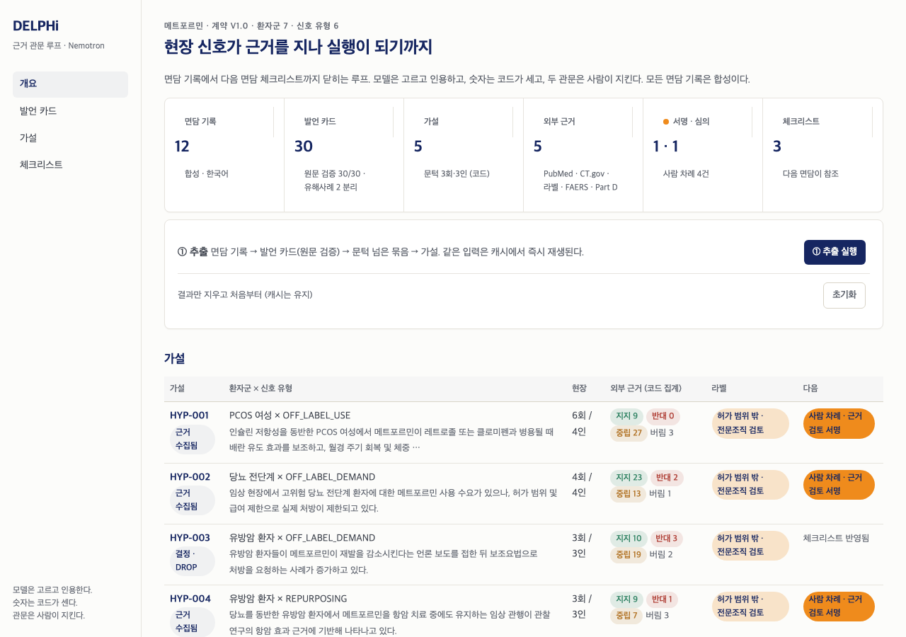
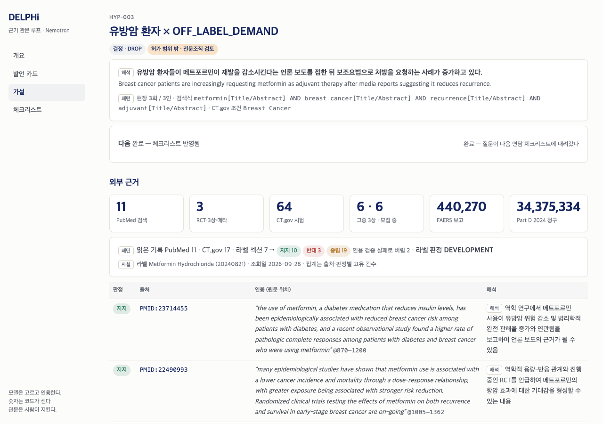
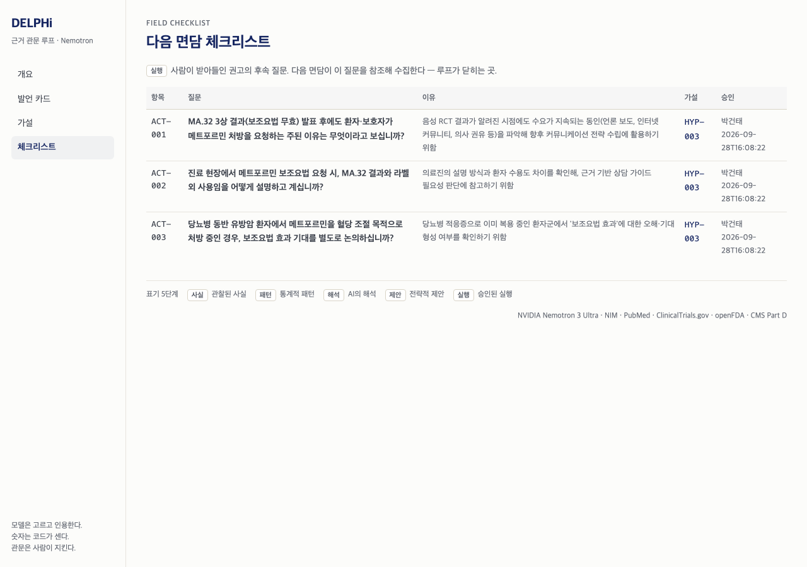

근거 관문이 있는 약물 신호 검증 에이전트 — NVIDIA Nemotron 3 Ultra (NIM) 기반
Korea Agentic AI Hackathon · 온라인 예선 제출 · Project DELPHi
| 배포 URL (웹 콘솔 — 직접 실행 가능) | https://delphi-web-production-52d6.up.railway.app |
|---|---|
| GitHub 저장소 | https://github.com/coldtype-08/delphi-evidence-loop |
| 정적 리포트 (실행 없이 결과 열람) | https://coldtype-08.github.io/delphi-evidence-loop/report.html |
| 실행 기록 (한 바퀴 전체 출력) | docs/demo_run.txt |
| 에이전트 스킬 정의 | skills/evidence-loop/SKILL.md |
제약 의학부는 의료진 면담에서 「허가 밖에서 쓰고 싶은데 막혔다」 「써봤더니 이랬다」 「다른 용도로 쓴다」 같은 신호를 매일 듣지만, 기록은 형식이 제각각인 자유 텍스트로 쌓입니다. 한 문서만 보면 일화이고 열 문서를 세면 패턴인데, 셀 장치가 없어 몇 명이 몇 번 말했는지 아무도 모릅니다(업계 설문: 의학부 팀 91%가 수집한 데이터 대부분을 인사이트로 쓰지 못함). LLM에 요약을 맡기면 숫자를 지어내고 근거 없는 주장이 보고서에 섞이며, 허가 범위 밖 신호가 상업 활동으로 새는 규제 위험이 생깁니다. 의료·규제 영역에서 필요한 것은 요약이 아니라 원문까지 되짚을 수 있는 근거이고, 더 많이 아는 모델이 아니라 모델이 못 하는 일을 코드와 사람이 막아 주는 구조입니다.
현장 면담 기록에서 다음 면담 체크리스트까지 닫히는 6단계 폐쇄 루프입니다. 웹 콘솔은 단계마다 누구 차례인지(에이전트 / 사람)를 보여 주고, 사람 차례만 오렌지로 표시합니다.
| 단계 | 주체 | 무엇을 하나 |
|---|---|---|
| ① Sense | Nemotron | 한국어 면담 기록에서 발언을 골라 원문 그대로 인용. 코드가 원문에서 위치를 찾아 검증하고, 못 찾으면 «버림»으로 남긴다. 유해사례 후보는 별도 safety 큐. |
| ② 계수·문턱 | 코드 | 언급 수·의료진 수를 세고, 문턱(3회·3인)을 넘은 (환자군 × 신호 유형)만 가설로. 가설 문장과 검색식은 모델이 쓴다. |
| ③ Screen | 에이전트 3종 | PubMed · ClinicalTrials.gov · FDA 라벨을 읽고 지지/반대/중립을 인용·원문 위치와 함께 표시. RCT·3상·메타분석을 먼저 읽는다. FAERS · Medicare Part D 수치는 API 값 그대로. |
| ④ 관문 1 | 사람 | 근거를 읽고 이름으로 서명해야 심의로 간다. 서명 없이는 코드가 심의를 거부한다. |
| ⑤ Board | Nemotron (사고 모드) | 권고 · 위험 · 다음 면담에서 물을 질문을 쓴다. 허가 범위 밖 가설은 코드가 전문조직 검토 경로로만 보내고 상업 액션을 제안하지 않는다. |
| ⑥ 관문 2 | 사람 | 권고를 받아들이면 후속 질문이 다음 면담 체크리스트로 내려간다 — 루프가 닫힌다. |

개요 화면: 면담 12 → 발언 카드 30(원문 검증 30/30, 유해사례 2 분리) → 가설 5 → 외부 근거 5 → 서명·심의 → 체크리스트 3. «사람 차례»가 오렌지로 표시된다.
| 층 | 기술 | 어떻게 썼나 |
|---|---|---|
| 추론 (NVIDIA) | Nemotron 3 Ultra nvidia/nemotron-3-ultra-550b-a55b · NIM API (OpenAI 호환) | 추출 · 근거 판독 · 심의 전 과정, 한국어 공식 지원. 강제 함수 호출(tool_choice)로 JSON 스키마 출력을 받고 jsonschema로 검증. 심의 단계만 reasoning 모드(enable_thinking)를 켜고 추론 내용은 감사용으로 보관. 모든 호출은 래퍼 한 곳을 지나며 캐시·실행 로그(모델 · 토큰 · 캐시 적중)를 남긴다. |
| 스킬 (NVIDIA) | Agent Skills 규격 skills/evidence-loop/SKILL.md | Claude Code · OpenClaw 등 호환 에이전트가 이 루프를 도구로 호출한다. |
| 샌드박스 (NVIDIA) | OpenShell / NemoClaw sandbox/EGRESS.md | deny-by-default 네트워크 정책에 넣을 허용 호스트 5개(NIM + 공개 근거원 4)를 명세. 이번 예선은 정책 문서까지이며 샌드박스 실행은 본선 과제. |
| 앱 | Python 3.12 · uv · FastAPI · openai SDK · httpx · jsonschema | 서버 렌더 웹 콘솔 + CLI. 상태는 JSON 파일 하나가 정본. |
| 근거원 | PubMed E-utilities · ClinicalTrials.gov API v2 · openFDA(라벨 · FAERS) · CMS Medicare Part D | 모든 응답을 디스크에 캐시 — 같은 입력은 키 없이도 동일 결과를 재생한다. |
| 배포 | Docker → Railway | 환경변수는 NVIDIA_API_KEY 하나. 키는 캐시·로그에 남지 않는다. |
| 기준 | 이 프로젝트에서 |
|---|---|
| NVIDIA Agent 기술 활용 심도 | Nemotron 3 Ultra를 함수 호출 + JSON 스키마 강제 + 단계별 reasoning 모드 제어로 사용. 호출 래퍼 · 캐시 · 실행 로그가 한 곳. Agent Skills 규격의 스킬과 OpenShell 정책 명세를 같이 제출. |
| 실용성 · 산업가치 · 혁신성 | 실제 업무(의학부 현장 신호 관리)와 실제 규제 제약(허가 범위 · 유해사례 분리)을 그대로 설계에 넣었다. 혁신은 «더 잘 요약»이 아니라 모델이 못 하는 일을 코드와 사람이 막는 구조 — 인용 검증 · 코드 계수 · 두 개의 이름 서명 관문. |
| 완성도 | 웹 콘솔에서 한 바퀴 완주(배포됨) · CLI 동일 · 정적 리포트 · 실행 기록 · 오프라인 자가시험 · 캐시 재생. 데모 결과는 실측이며 문서의 숫자는 코드가 낸 것. |
| 커스터마이징 · 독창성 | 고정 헤더(환자군 · 신호 유형)를 사람이 정하는 계약, 원문 위치를 요구하는 인용 검증기(«…» 조각 · 공백 차이 허용, 이어 붙인 인용은 버림), 화면의 모든 판단 문장에 5단계 표기(사실 · 패턴 · 해석 · 제안 · 실행). |
약은 메트포르민 — 특허가 만료된 지 오래고 특정 회사 소유가 아니며 공개 근거가 가장 두껍다(PubMed 제목 18,054편 · CT.gov 3,120건 · FAERS 440,270건 · Part D 연 3,400만 건 청구). 모든 면담 기록은 합성이다(가상 의료진 12인).
| 가설 | 현장 | 외부 근거 (지지/반대/중립 · 버림) | 이 장면이 보여주는 것 |
|---|---|---|---|
| HYP-003 유방암 환자 × 쓰고 싶다 | 3회/3인 | 10 / 3 / 19 · 2 | 반대 근거 장면. 언론 보도로 환자 요청은 늘지만 대규모 3상 MA.32(NCT01101438, n=3,649)는 무효. 같은 시험이 CT.gov에서는 «진지하게 시험됐다»(지지), 결과 논문에서는 반대로 잡힌다 — 등록과 결과는 다르다. 심의 권고 DROP, 사람이 서명·결정, 후속 질문 3개가 체크리스트로. |
| HYP-001 PCOS 여성 × 써봤다 | 6회/4인 | 9 / 0 / 27 · 3 | 지지 근거 장면. 허가 밖이지만 3상 42건 — 전문조직 검토 경로. |
| HYP-002 당뇨 전단계 × 막혔다 | 4회/4인 | 23 / 2 / 13 · 1 | 라벨 경계 장면. 라벨은 침묵(중립), 시험은 117건 — «막혔다»와 «써봤다»를 가르는 이유. |
| HYP-004 · HYP-005 유방암 × 다른 쓰임 · 자료 부족 | 3회/3인 | 9 / 1 / 7 · 3 / 2 / 2 / 7 · 1 | 근거가 얇으면 얇다고 보인다. |
| 소아 10세 미만 · 노인 신기능 · 임신부 | 1~2인 | — | 문턱 미달. 집계에는 보이지만 가설이 되지 않는다. |
| 젖산산증 입원 · B12 결핍 신경병증 | 2건 | — | safety 큐. 분석에 섞이지 않는다. |

HYP-003 상세: 검색식 · KPI(PubMed 11 · RCT 3 · CT.gov 64 · 3상 6 · FAERS · Part D) · 근거 표(판정 · 출처 링크 · 인용 원문 위치 · 해석).

체크리스트: 사람이 받아들인 권고의 후속 질문이 다음 면담 항목이 된다 — 루프가 닫히는 곳.
uv sync → .env에 NVIDIA_API_KEY(build.nvidia.com, 무료) → uv run uvicorn loop.web:app --port 8030 또는 bash scripts/demo.sh. 공개 API 응답과 모델 응답이 저장소에 캐시돼 있어 키 없이도 같은 결과가 즉시 재생된다. 새 입력(새 서명자 이름으로 심의 등)만 실제 호출이다.
면담 기록은 전부 합성이며 실제 환자·의료진·기관 정보가 없다. 근거는 공개 API만 쓴다. API 키는 호스트 환경변수에만 있고 캐시·로그·저장소에 남지 않는다.
sandbox/EGRESS.md 정책을 실제로 적용하는 것이 첫 작업.data/field_notes.json이 그 출력이라고 가정).